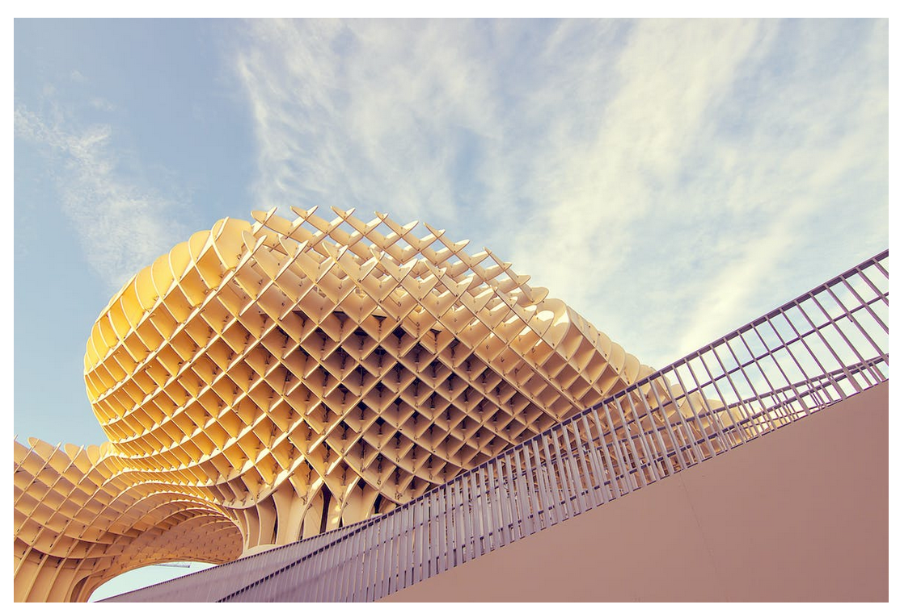
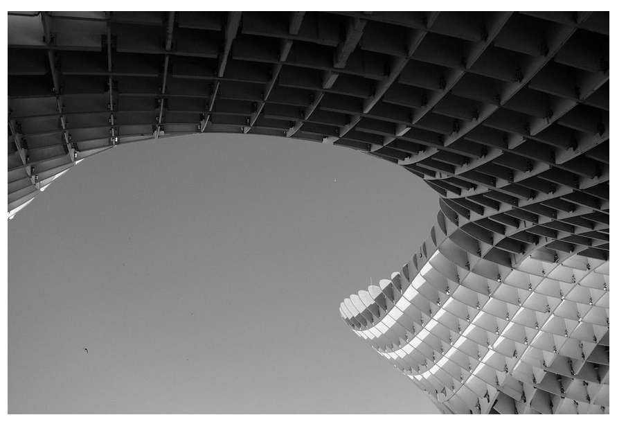

La imagen de las setas de la izquierda tiene en el css position: absolute;, lo que desbloquea las propiedades top, right, bottom y left (además del z-index) y la saca del flujo normal de la página permitiendo que se coloque libremente donde queramos. El resto de los elementos se comportarán como si no estuviera allí y procederán a ocupar el espacio que normalmente ocuparía la imagen.
Los valores top, right, bottom y left son coordenadas respecto a la primera etiqueta antecesora que encuentre con position: relative (en realidad respecto a cualquier etiqueta que no sea position:static). Si no encuentra ninguna se colocará respecto al <body>.
La división <div class="imagen"> que contiene la imagen tiene como position:relative,
que no lo saca del flujo normal de la página. Se le asigna un width y height para que se respete el espacio que ocupaba la imagen (la altura de la división es menor que la altura de la imagen).
Para que la imagen no se coloque encima de la cabecera en ninguna circunstancia, el <h1> tiene un
z-indez:1>, lo que lo coloca en una capa superior.
